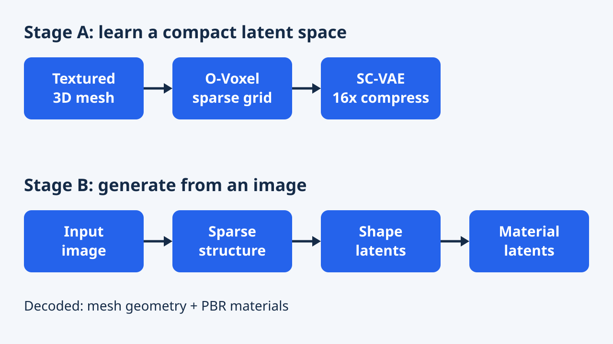
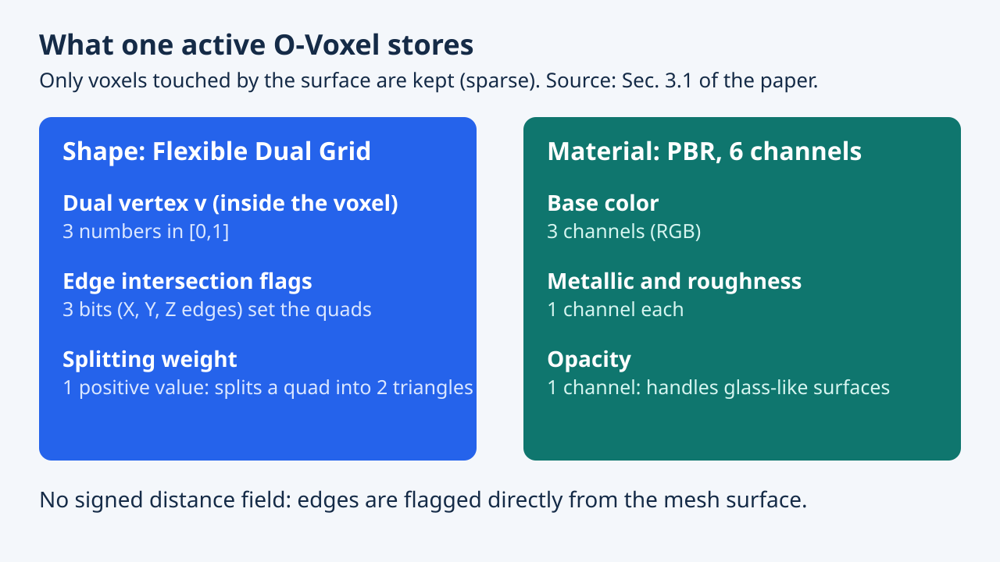

Native and Compact Structured Latents for 3D Generation
Bài báo đề xuất O-Voxel, biểu diễn voxel thưa lưu cả hình học lẫn vật liệu PBR, cùng SC-VAE nén 16 lần để một tài sản 1024 có texture chỉ còn khoảng 9,6K token. Các mô hình flow-matching tổng cộng khoảng 4B tham số sinh hình dạng và vật liệu từ ảnh, được báo cáo vượt các baseline về tái tạo và sinh trên các thử nghiệm của tác giả.
Bài báo xây dựng bộ sinh 3D từ ảnh quanh một biểu diễn 3D gốc mới, thay vì chuyển mesh sang trường khoảng cách. Đánh đổi trung tâm là độ trung thực so với số token: một tài sản 1024 có đầy đủ texture được nén còn khoảng 9,6K token latent.
Tổng quan
Hãy tưởng tượng chụp ảnh một món đồ chơi rồi nhận lại mô hình 3D đầy đủ, kể cả phần kim loại bóng hay kính trong suốt. Nhiều hệ thống cũ trước tiên biến hình dạng thành một "bản đồ khoảng cách" mờ, làm mất các lớp mỏng, phần rỗng bên trong và cạnh sắc.
Bài báo này giữ vật thể dưới dạng một tập khối nhỏ thưa, chỉ tồn tại ở nơi có bề mặt, và ghi cả hình dạng lẫn vật liệu vào mỗi khối. Sau đó một bộ nén thu nhỏ danh sách này để bộ sinh lớn xử lý nhanh.
Mục tiêu: sinh tài sản 3D có texture độ phân giải cao, topology tùy ý, từ một ảnh. Bài báo (tên thường gọi TRELLIS.2) cho rằng các biểu diễn hiện có khó nắm bắt topology phức tạp và ngoại hình chi tiết.
Đóng góp: (1) O-Voxel, cấu trúc voxel thưa "không dùng trường" lưu hình học và vật liệu PBR gồm độ mờ đục, chuyển đổi với mesh mà không cần tối ưu hay render; (2) SC-VAE giảm mẫu không gian 16 lần, còn khoảng 9,6K token cho tài sản 1024 đủ texture; (3) các bộ sinh flow-matching tổng cộng khoảng 4B tham số, huấn luyện trên dữ liệu 3D công khai.
Ý nghĩa: ít token làm bộ sinh lớn rẻ hơn; tác giả báo cáo khoảng 3 s, 17 s, 60 s trên H100 ở độ phân giải 512, 1024, 1536. Giải Best Student Paper là sự ghi nhận của hội nghị; điểm mạnh, yếu bên dưới là cách đọc bài báo.
TRELLIS.2 gồm ba phần: biểu diễn không cần trường iso-surface (O-Voxel), autoencoder tích chập thưa hoàn toàn với nén không gian 16 lần (SC-VAE), và chuỗi ba mô hình flow-matching kiểu DiT cho cấu trúc thưa, latent hình học và latent vật liệu. Phần giới thiệu khẳng định chất lượng hình học và vật liệu vượt xa các mô hình hiện có mà vẫn nhanh hơn; bằng chứng là Bảng 1 đến 3 và các hình định tính, tóm tắt bên dưới.
Tính gọn nhẹ là yếu tố then chốt. Với khoảng 9,6K token cho tài sản 1024, mỗi DiT (khoảng 1,3B tham số) có thể bỏ phần gói tích chập và skip connection của TRELLIS trước đó, trở thành transformer encoder-only thuần. Các tác giả thuộc Tsinghua University, Microsoft Research, Microsoft AI và USTC; công việc của tác giả đầu được thực hiện trong kỳ thực tập tại Microsoft Research. Trạng thái Best Student Paper được ghi trên trang giải thưởng chính thức của CVPR 2026.
Vấn đề nghiên cứu
Mô hình 3D thực tế có thể có lỗ, tường đôi, phần rỗng bên trong và bộ phận giống kính. Các bộ sinh trước đây thường ép mọi vật thành một hình kín gọn gàng, nên mất chi tiết hoặc tốn nhiều tính toán.
Các bộ sinh 3D lớn thường dùng trường iso-surface (SDF, FlexiCubes), bị giới hạn với bề mặt hở, non-manifold và cấu trúc kín bên trong. Nhiều hệ thống bỏ qua vật liệu; TRELLIS trước đó mô hình chung hình học và ngoại hình nhưng dựa vào đặc trưng ảnh nhiều góc nhìn và giám sát bằng render, nên theo tác giả thiếu cấu trúc và vật liệu phức tạp.
Trở ngại thứ hai là kích thước: latent có cấu trúc cho hình học chính xác nhưng cần nhiều token, còn latent không cấu trúc nén mạnh nhưng kém trung thực. Bài toán: đầu vào một ảnh, đầu ra mesh có vật liệu PBR; liệu một biểu diễn gốc vừa mô tả bề mặt tùy ý vừa đủ gọn để huấn luyện bộ sinh hàng tỉ tham số?
Các baseline trong bài chia ba họ: latent không cấu trúc kiểu Shape2VecSet (Dora), latent có cấu trúc dựa voxel thưa (Trellis, Direct3D-S2, SparseFlex) và, với bài toán sinh, các hệ thống như Hi3DGen, Step1X-3D, Hunyuan3D 2.1. Bảng 1 cho thấy vị trí các họ trên đường đánh đổi độ trung thực và số token: Dora dùng 2,0K đến 4,1K token nhưng mesh distance ở mức hàng trăm; SparseFlex 1024 đạt 0,3132 với 225K token; Trellis có 9,6K token nhưng MD 85,07.
Hai vấn đề thực tế làm bài toán rõ hơn. Việc tính SDF, flood-fill và tối ưu lặp khiến chuyển đổi từ mesh chậm và bắt buộc mesh kín nước. Ngoài ra thước đo phải phản ánh cấu trúc bên trong, vì vậy bài dùng mesh distance (điểm tới mesh, tính trên mọi bề mặt) thay vì chỉ Chamfer trên bề mặt nhìn thấy.
Ý tưởng chính
Giữ mọi thứ ở dạng gốc và nhỏ gọn. Lưu vật thể trực tiếp thành các khối thưa chứa hình dạng và vật liệu, rồi nén danh sách đó thật mạnh bằng một autoencoder thiết kế riêng.
Trực giác: bề mặt chỉ chạm vài voxel nên chỉ giữ chúng. Mỗi voxel lưu dual vertex, ba cờ giao cạnh, một trọng số chia (hình dạng) và sáu kênh vật liệu: màu nền, metallic, roughness, độ mờ đục. Giao điểm đọc trực tiếp từ mesh thay vì từ trường, nên bề mặt hở, non-manifold và kín đều biểu diễn được; chuyển đổi mất vài giây trên một CPU.
Ý tưởng thứ hai là nén mạnh nhưng cẩn thận: SC-VAE thêm lối tắt residual không tham số chuyển thông tin giữa không gian và kênh. Ví dụ nhỏ: khi gộp voxel, đặc trưng tám voxel con được xếp vào kênh rồi lấy trung bình, tạo đường không tham số song song với tích chập học được.
Hình dạng đi theo Dual Contouring nhưng không có trường: mesh của tài sản cho cờ giao cạnh và dữ liệu Hermite (điểm và pháp tuyến). Dual vertex cực tiểu hóa hàm sai số bậc hai, thêm hai số hạng so với DC cổ điển: $\min_v \sum_i d_{\Pi,i}^2+\lambda_{bound}\sum_j d_{L,j}^2+\lambda_{reg}\|v-\bar q\|^2$. Số hạng thứ hai kéo đỉnh về các cạnh biên (bề mặt hở); số hạng thứ ba giữ đỉnh gần trung bình các điểm giao và làm bài toán ổn định. Trọng số chia theo quy tắc topology linh hoạt của FlexiCubes để quyết định mỗi quad chia thành tam giác thế nào; cả vị trí đỉnh và trọng số có thể tinh chỉnh bằng loss render.
Với vật liệu, thuộc tính voxel lấy bằng cách chiếu tâm voxel lên tam giác, lấy mẫu texture và lấy trung bình theo khoảng cách; giải mã dùng nội suy ba tuyến tính. Trong SC-VAE, lối tắt residual xếp tám voxel con vào kênh rồi lấy trung bình theo nhóm (giảm mẫu) và nhân bản nhóm kênh về các voxel con (tăng mẫu). Bộ tăng mẫu cắt tỉa sớm dự đoán trong tám voxel con cái nào hoạt động trước khi mở rộng, tiết kiệm thời gian và bộ nhớ; khối residual thay hai tích chập bằng một tích chập kiểu ConvNeXt cộng MLP theo điểm rộng.
Phương pháp


Có hai giai đoạn. Đầu tiên, dạy bộ nén co và dựng lại vật thể 3D. Sau đó, dạy bộ sinh vẽ vật thể trong không gian đã nén theo từng bước: bố cục thô, rồi chi tiết hình dạng, rồi vật liệu.
Giai đoạn một huấn luyện hai SC-VAE, một cho hình dạng, một cho vật liệu (điều kiện theo cấu trúc chia nhỏ của VAE hình dạng). Mạng là tích chập thưa hoàn toàn, khoảng 800M tham số, không phải transformer. Hai pha: 256^3 với loss tái tạo trực tiếp và KL, rồi 512^3 thêm loss render trên mask, độ sâu, pháp tuyến và vật liệu.
Giai đoạn hai huấn luyện ba DiT flow-matching, mỗi mô hình khoảng 1,3B tham số: cấu trúc thưa, latent hình học, và latent vật liệu theo ảnh và hình học đã sinh. Đặc trưng ảnh từ DINOv3-L. Huấn luyện tiến dần từ đầu ra 512^3 (latent 32^3) lên 1024^3 (latent 64^3).
Dữ liệu: SC-VAE dùng Trellis-500K đã lọc tài sản PBR (Objaverse-XL, ABO, HSSD); bộ sinh dùng khoảng 800K tài sản, thêm TexVerse. Phần cứng: 16 H100 cho SC-VAE, 32 H100 cho DiT. Khi suy luận có thể xếp tầng để tăng độ phân giải (Mục 4.5).
Các loss (Phương trình 6 đến 8 và Phụ lục A.3): giai đoạn một dùng MSE trên dual vertex, BCE trên cờ cạnh và mask cắt tỉa, L1 trên vật liệu và số hạng KL. Giai đoạn hai thêm loss render: với hình dạng, $\|\hat m-m\|_1+10\|\hat d-d\|_1+d_p(\hat n,n)$ trên mask, độ sâu và pháp tuyến; với vật liệu, $d_p$ trên màu nền và bản đồ metallic-roughness-alpha, trong đó $d_p=\|a-b\|_1+0.2\,d_{SSIM}+0.2\,d_{LPIPS}$. Camera đặt với mặt phẳng gần rất nông để ảnh render cắt qua bề mặt và giám sát phần bên trong. Giai đoạn một chạy ở 256^3, giai đoạn hai ở 512^3; độ phân giải cao hơn dùng lại trọng số vì mạng hoàn toàn tích chập thưa.
Mỗi DiT có độ rộng 1536, 30 khối, 12 head chiều 128 và MLP rộng 8192, với điều biến timestep AdaLN-single, RoPE và QK-RMSNorm. Ảnh gợi ý vào qua cross-attention; điều kiện hình dạng cho mô hình vật liệu được nối theo kênh với tensor đầu vào. Huấn luyện bằng rectified flow, $x(t)=(1-t)x_0+t\epsilon$ với loss $\|v_\theta(x(t),t)-(\epsilon-x_0)\|_2^2$ và lấy mẫu timestep logit-normal(1,1) như Trellis; AdamW, learning rate 1e-4, weight decay 0,01, tỉ lệ bỏ điều kiện 0,1 cho classifier-free guidance. Tích chập thưa chạy trên FlexGEMM, backend Triton dạng masked implicit GEMM mô tả ở Phụ lục B (NVIDIA và AMD).
Mở rộng lúc suy luận: max-pool O-Voxel 1024^3 đã sinh về cấu trúc thưa 96^3 rồi sinh lại hình học để đạt 1536^3, hoặc giảm mẫu O-Voxel 512^3 xuống 64^3 để có cấu trúc sạch hơn cho 1024^3. Bài trình bày đây là đánh đổi điều khiển được giữa tính toán và chất lượng, với bằng chứng định tính (Hình 8).
Thực nghiệm và kết quả
| Phương pháp | Token | Hệ số giảm mẫu | Dec. (s) | MD Toys4K | PSNR Toys4K | MD Sketchfab | PSNR Sketchfab |
|---|---|---|---|---|---|---|---|
| Trellis | 9.6K | 4x | 0.108 | 85.07 | 30.29 | 49.20 | 24.31 |
| Direct3D-S2 1024 | 17K | 8x | 13.0 | 73.17 | 27.38 | 70.13 | 23.82 |
| SparseFlex 512 | 56K | 4x | 1.22 | 1.303 | 36.56 | 3.221 | 29.46 |
| SparseFlex 1024 | 225K | 4x | 3.21 | 0.3132 | 37.34 | 0.7593 | 32.12 |
| Ours 512 | 2.2K | 16x | 0.077 | 0.0323 | 39.54 | 0.1572 | 31.00 |
| Ours 1024 | 9.6K | 16x | 0.301 | 0.0042 | 43.11 | 0.0170 | 35.26 |
| Phương pháp | CLIP | CLIP-N | ULIP-2 | Uni3D | Pref % | Pref-N % |
|---|---|---|---|---|---|---|
| Trellis | 0.876 | 0.748 | 0.470 | 0.414 | 6.40% | 2.82% |
| Hi3DGen | – | 0.753 | 0.395 | 0.373 | – | 6.57% |
| Direct3D-S2 | – | 0.746 | 0.420 | 0.392 | – | 12.2% |
| Step1X-3D | 0.875 | 0.738 | 0.464 | 0.411 | 11.8% | 0.469% |
| Hunyuan3D 2.1 | 0.869 | 0.753 | 0.474 | 0.427 | 13.3% | 7.51% |
| Ours | 0.894 | 0.758 | 0.477 | 0.436 | 66.5% | 69.0% |
| Cấu hình | Token | Dec. (ms) | MD | MD F1 | PSNR | LPIPS |
|---|---|---|---|---|---|---|
| SC-VAE f16c32 | 503 | 28.6 | 1.032 | 0.312 | 27.26 | 0.072 |
| f16c32 w/o Residual AE | 503 | 28.7 | 1.747 | 0.268 | 26.73 | 0.081 |
| f16c32 w/o Opt. ResBlock | 503 | 29.6 | 1.198 | 0.285 | 26.67 | 0.083 |
| SC-VAE f32c128 | 118 | 33.9 | 1.405 | 0.273 | 26.65 | 0.081 |
| f32c128 w/o Residual AE | 118 | 34.0 | 7.394 | 0.192 | 25.01 | 0.102 |

Trong các thử nghiệm của tác giả, bộ nén mới dựng lại hình dạng chính xác hơn nhiều so với các bộ cũ trong khi dùng ít token hơn hẳn bộ nén cũ mạnh nhất. Trong một khảo sát nhỏ, mọi người chọn mô hình do nó sinh ra nhiều nhất.
Quy trình: tái tạo dùng Toys4K (473 tài sản đủ bản đồ PBR) và 90 tài sản Sketchfab mới, không có trong huấn luyện; thước đo MD, Chamfer bề mặt nhìn thấy, PSNR và LPIPS pháp tuyến. Sinh dùng 100 ảnh gợi ý do AI tạo với CLIP, ULIP-2, Uni3D và khảo sát người dùng. Baseline: Dora, Trellis, Direct3D-S2, SparseFlex (tái tạo); Trellis, Hi3DGen, Direct3D-S2, Step1X-3D, Hunyuan3D 2.1 (sinh).
Tái tạo (Bảng 1): ở 1024, MD Toys4K là 0,0042 so với 0,3132 của SparseFlex 1024, với 9,6K token thay vì 225K và giải mã 0,301 s thay vì 3,21 s; PSNR pháp tuyến 43,11 so với 37,34 dB. Tác giả nêu mô hình vượt mọi baseline ở mọi thước đo của bảng. Vật liệu không có baseline (38,89 dB trên bản đồ PBR).
Sinh (Bảng 2): CLIP 0,894 so với 0,876 của Trellis; Uni3D 0,436 so với 0,427 của baseline tốt nhất; 66,5% phiếu chất lượng tổng thể trong khảo sát khoảng 40 người. Texture chỉ so sánh định tính. Loại bỏ thành phần (Bảng 3): bỏ residual autoencoding làm MD tăng 69% ở nén 16 lần và 526% ở nén 32 lần.
Đọc kỹ Bảng 1: các baseline dùng hệ số giảm mẫu khác nhau (4x hoặc 8x so với 16x) và số token khác nhau, nên bảng trộn lẫn độ gọn và độ trung thực. Mô hình 512 (2,2K token, MD 0,0323) đã vượt SparseFlex 1024 trên MD Toys4K, PSNR pháp tuyến và thời gian giải mã. Trên tập Sketchfab khó hơn, khoảng cách thu hẹp: MD 0,0170 so với 0,7593 và PSNR 35,26 so với 32,12 dB. Thời gian trong Bảng 1 đo trên A100, còn 3 s, 17 s và 60 s là thời gian sinh trên H100, lấy từ phần giới thiệu và trang dự án chứ không từ bảng.
Đọc Bảng 2: chênh lệch ở CLIP, CLIP-N và ULIP-2 nhỏ (ví dụ ULIP-2 0,477 so với 0,474), trong khi tỉ lệ ưa thích của người dùng lớn (66,5% so với 13,3% của phương pháp kế tiếp). Khảo sát có 202 lựa chọn tổng thể và 213 lựa chọn hình dạng từ khoảng 40 người (Bảng 7), nhóm nhỏ, trên ảnh gợi ý do AI tạo. Bài không báo cáo khoảng tin cậy hay chạy lặp trong các bảng này.
Diễn giải loại bỏ thành phần (Bảng 3): lối tắt residual chủ yếu bảo vệ khi nén mạnh. Ở f16c32 nó cải thiện MD từ 1,747 xuống 1,032 và PSNR từ 26,73 lên 27,26; ở f32c128 nó tạo khác biệt giữa MD 1,405 và 7,394 chỉ với 118 token. Khối tối ưu cải thiện chất lượng với thời gian giải mã gần như không đổi (khi bỏ: MD 1,198 so với 1,032 và PSNR 26,67 so với 27,26 dB; giải mã 29,6 so với 28,6 ms), và bảng chạy ở 256^3, chỉ trên tập Sketchfab.
Khẳng định định tính (Hình 5 đến 8, phụ lục Hình 11 đến 14): cấu trúc mỏng, lá hở, buồng lái kín và vật liệu kính, kim loại được cho là giữ tốt; baseline được mô tả là quá mịn hoặc có lỗi, còn texture nhiều góc nhìn là bị bóng ma hoặc đường nối. Các trường hợp thất bại không được trình bày ngoài phần giới hạn.
Hạn chế
Các khối có kích thước cố định nên hai lớp mỏng rất gần nhau có thể nhòe vào nhau. Có thể xuất hiện lỗ nhỏ và được vá sau. Phương pháp cũng không biết gì về các bộ phận hay ý nghĩa của vật thể.
Do tác giả nêu
Phụ lục F nêu ba hạn chế. (1) Biểu diễn bị giới hạn bởi độ phân giải voxel: hai bề mặt song song rất gần nhau trong một voxel khiến dual vertex nằm giữa và vật liệu bị lấy trung bình, làm nhòe. (2) Mesh tái tạo và sinh ra đôi khi có lỗ nhỏ vì khó đảm bảo bề mặt kín từ bộ giải mã thưa; lấp lỗ chuẩn thường xử lý được. (3) O-Voxel không mã hóa cấu trúc bộ phận hay ngữ nghĩa. Hướng tương lai: giải mã ổn định hơn, phân đoạn bộ phận, topology dạng đồ thị.
Phân tích của EyeCode (diễn giải biên tập)
Bộ kiểm thử sinh chỉ có 100 ảnh gợi ý do AI tạo và khảo sát khoảng 40 người; so sánh texture là định tính và bài không có khảo sát hệ thống các trường hợp thất bại.
Do tác giả nêu
Hiện tượng aliasing là bản chất của việc dùng một dual vertex và một vector vật liệu trung bình cho mỗi voxel; cấu trúc mỏng hơn bước voxel không thể tách rời. Lỗ được quy cho khó khăn của bộ giải mã thưa trong việc đảm bảo manifold kín ở độ phân giải cao. Thiếu cấu trúc bộ phận và ngữ nghĩa; hướng mở rộng đề xuất là phân đoạn bộ phận cộng topology đồ thị.
Phân tích của EyeCode (diễn giải biên tập)
Một số so sánh không hoàn toàn ngang bằng: baseline khác nhau về hệ số giảm mẫu và ngân sách token, tái tạo vật liệu không có baseline, và thước đo sinh dựa trên bộ chấm họ CLIP có chênh lệch nhỏ. Chi phí tính toán cao (16 và 32 H100 khi huấn luyện; README yêu cầu GPU NVIDIA 24 GB khi suy luận), nên huấn luyện lại độc lập tốn kém dù mã và trọng số đã công khai. Bài không kiểm tra liệu phép nén có tổng quát cho texture tần số rất cao hay nội dung cỡ cả cảnh.
Điểm cần nhớ
- Biểu diễn 3D tốt phải xử lý được lỗ, phần bên trong và vật liệu.
- Nén mạnh nhưng cần lối tắt để không mất chi tiết.
- Sinh theo giai đoạn: bố cục, hình dạng, rồi vật liệu.
- O-Voxel lưu hình học và thuộc tính PBR ở dạng gốc, không dùng trường khoảng cách.
- SC-VAE nén 16 lần, cho khoảng 9,6K token với tài sản 1024 có texture (Bảng 1: SparseFlex 1024 dùng 225K).
- Kết quả được báo cáo ưu thế ở tái tạo Toys4K và Sketchfab, ở CLIP và Uni3D, và trong khảo sát người dùng.
- Giới hạn nêu ra: aliasing do độ phân giải voxel, lỗ nhỏ, không có cấu trúc bộ phận hay ngữ nghĩa.
Hướng gợi ý (đề xuất của EyeCode, không phải kết luận của bài báo)
- So sánh autoencoder thưa của bạn có và không có lối tắt không tham số từ không gian sang kênh.
- Thử mô hình công bố trên ảnh chụp thật thay vì ảnh gợi ý do AI tạo.
- Nén chính là điều mở khóa quy mô: DiT thuần 1,3B mỗi mô hình khả thi vì token chỉ khoảng 9,6K ở 1024.
- Residual autoencoding dùng lối tắt là thành phần được ủng hộ tốt nhất, đặc biệt ở nén 32 lần (MD 7,394 khi bỏ so với 1,405).
- Thước đo mesh distance trên mọi bề mặt thưởng cho cấu trúc bên trong; chỉ Chamfer bề mặt nhìn thấy thì không.
- Phân biệt phần định lượng (Bảng 1 đến 3) với phần chỉ có hình ảnh (texture, mở rộng lúc suy luận).
- Giải thưởng là sự ghi nhận chính thức; đánh giá về tác động rộng hơn là chuyện khác.
Hướng gợi ý (đề xuất của EyeCode, không phải kết luận của bài báo)
- Chạy mã công bố trên một bộ mesh nhỏ và tự đo số token so với sai số tái tạo.
- Đánh giá tỉ lệ lỗ và lỗi cấu trúc mỏng trên tài sản của bạn, vì bài chỉ báo cáo định tính.
- Thử chuỗi xếp tầng ở Mục 4.5 và theo dõi mức tăng chất lượng trên mỗi giây tính thêm.
Tài liệu tham khảo
- Native and Compact Structured Latents for 3D Generation (arXiv:2512.14692, Bảng 1-3, Phụ lục A-F)
- Native and Compact Structured Latents for 3D Generation (CVF open access, CVPR 2026)
- Trang dự án TRELLIS.2 (thời gian sinh)
- Kho mã microsoft/TRELLIS.2 (README, giấy phép, roadmap)
- Thông báo Best Papers của CVPR 2026